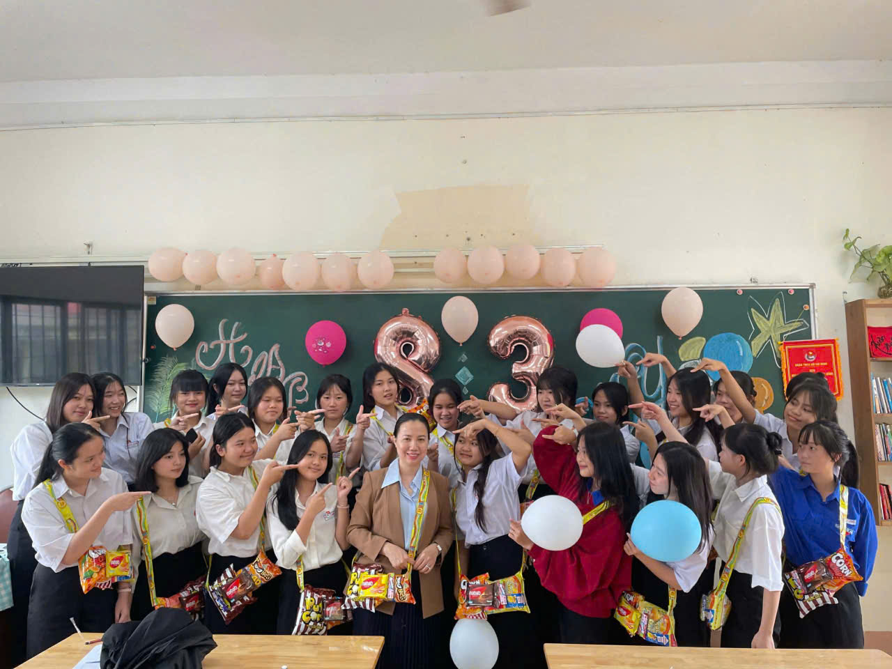
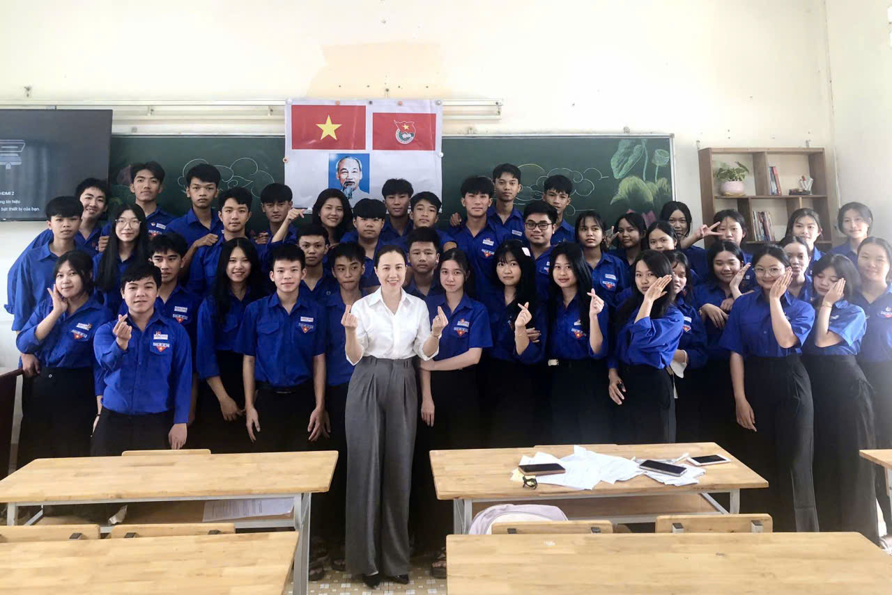

✨Lời Ngỏ Chân Thành✨
Thời gian trôi qua thật nhanh, từ những ngày đầu tiên bỡ ngỡ bước vào cổng trường THPT Krông Bông, đến nay chúng em đã sắp hoàn thành chặng đường trung học phổ thông. Và trong suốt hành trình ấy, luôn có bóng dáng của quý thầy cô - những người thầy, người cô tận tâm, yêu nghề, yêu trò.

Thầy cô - Người dẫn đường cho học trò

Những kỷ niệm không thể nào quên
Quý thầy cô không chỉ truyền đạt kiến thức sách vở mà còn dạy chúng em biết yêu thương, biết sống có trách nhiệm, biết vượt qua khó khăn và biết trân trọng những giá trị tốt đẹp trong cuộc sống. Những bài học ấy sẽ mãi mãi in sâu trong tâm trí chúng em.
"Thầy cô như người lái đò, đưa học trò qua sông tri thức,
vượt qua bao thác ghềnh để đến bến bờ tương lai"
Có những lúc chúng em nghịch ngợm, có lúc chúng em chưa đạt được kết quả như mong đợi, nhưng thầy cô vẫn luôn kiên nhẫn, động viên và tin tưởng vào chúng em. Tình cảm ấy, chúng em sẽ không bao giờ quên.
Một lần nữa, chúng em xin kính chúc quý thầy cô luôn mạnh khỏe, hạnh phúc và thành công!
Trân trọng,
Lớp 12A4 - THPT Krông Bông